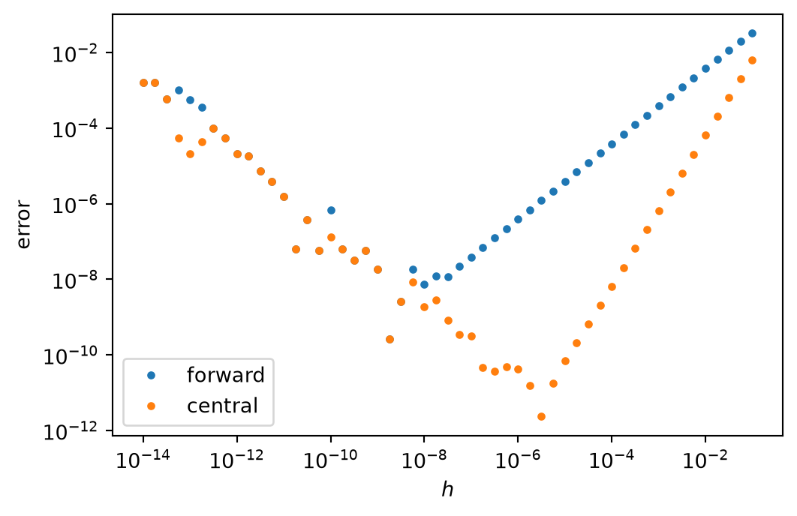
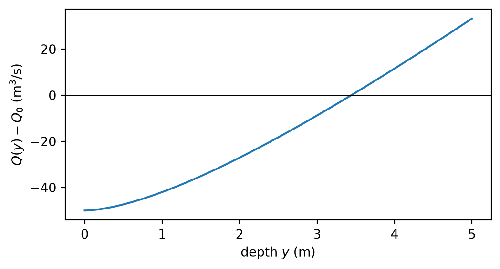

Covers unit 3 of the script. Problem 1 is worked on in the lab; problems 2 to 4 are homework.
Your toolbox. From this sheet on, collect the functions you write that are useful beyond one problem, such as the quadrature rules, bisection and Newton’s method, in a file toolbox.py in your repository. In a later sheet, or in your project, you then write from toolbox import bisection and use your own, tested function instead of writing it again.
Problem 1: Truncation and round-off error (in the lab, 4 points)
Approximate the derivative of \(u(x) = e^{-x^2}\) at \(x = 0.5\) with the forward and the central difference.
Plot the absolute error of both as a function of \(h\) for \(h = 10^{-1}, \dots, 10^{-14}\) with logarithmic axes.
Determine the observed order of both formulas in a range of \(h\) where round-off plays no role.
Read the optimal step and the smallest error from your plot and compare them with the estimates \(h \sim \sqrt{\varepsilon}\) and \(h \sim \varepsilon^{1/3}\) from the script.
Solution
The code is given twice: step by step, as you would write it, and in a compact form that works with whole NumPy arrays. Both give the same results.
The derivatives. For the error we need the exact derivative, and for c) also the second and third derivative. We write \(u = e^{g}\) with \(g(x) = -x^2\), \(g'(x) = -2x\). By the chain rule, \(\frac{\mathrm{d}}{\mathrm{d}x} e^{g} = g' \, e^{g}\), so
\[
u'(x) = -2x \, e^{-x^2} .
\]
For \(u''\) we differentiate the product \((-2x) \cdot e^{-x^2}\) with the product rule, \((pq)' = p' q + p q'\), where \(p = -2x\), \(p' = -2\) and \(q = e^{-x^2}\), \(q' = -2x \, e^{-x^2}\):
import numpy as np # NumPy: np.exp, np.log, ...import matplotlib.pyplot as plt # plottingdef u(x):return np.exp(-x**2)def dudx(x): # exact derivativereturn-2* x * np.exp(-x**2)x =0.5exact = dudx(x)h_values = []error_forward = []error_central = []for k inrange(53): # k = 0, ..., 52 h =10.0** (-1-0.25* k) # h = 10^-1, 10^-1.25, ..., 10^-14 forward = (u(x + h) - u(x)) / h central = (u(x + h) - u(x - h)) / (2* h) h_values.append(h) error_forward.append(abs(forward - exact)) error_central.append(abs(central - exact))# a) the plotfig, ax = plt.subplots(figsize=(6, 3.8))ax.loglog(h_values, error_forward, ".", label="forward")ax.loglog(h_values, error_central, ".", label="central")ax.set_xlabel("$h$")ax.set_ylabel("error")ax.legend()plt.show()# b) observed order from h = 1e-2 and h = 5e-3, far from the round-off rangeh1 =1e-2h2 =5e-3e1_f =abs((u(x + h1) - u(x)) / h1 - exact)e2_f =abs((u(x + h2) - u(x)) / h2 - exact)e1_c =abs((u(x + h1) - u(x - h1)) / (2* h1) - exact)e2_c =abs((u(x + h2) - u(x - h2)) / (2* h2) - exact)p_f = np.log(e1_f / e2_f) / np.log(h1 / h2)p_c = np.log(e1_c / e2_c) / np.log(h1 / h2)print(f"observed order, forward: {p_f:.3f}")print(f"observed order, central: {p_c:.3f}")# c) smallest error and the step where it occurs, found with a loopi_best_f =0# position of the smallest error so fari_best_c =0for i inrange(len(h_values)):if error_forward[i] < error_forward[i_best_f]: i_best_f = iif error_central[i] < error_central[i_best_c]: i_best_c = iprint(f"forward: smallest error {error_forward[i_best_f]:.1e}"f" at h = {h_values[i_best_f]:.1e}")print(f"central: smallest error {error_central[i_best_c]:.1e}"f" at h = {h_values[i_best_c]:.1e}")# c) the estimates of the scripteps =2.0**-52# machine epsilonu0 =abs(u(x)) # |u|, |u''|, |u'''| at x = 0.5u2 =abs((4* x**2-2) * np.exp(-x**2))u3 =abs((12* x -8* x**3) * np.exp(-x**2))h_f =2* np.sqrt(eps * u0 / u2) # forward: h_opt = 2 sqrt(eps |u| / |u''|)e_f =2* np.sqrt(eps * u0 * u2) # e = 2 sqrt(eps |u| |u''|)h_c = (3* eps * u0 / u3) ** (1/3) # central: h_opt = (3 eps |u| / |u'''|)^(1/3)e_c = h_c**2* u3 /2# e = h_opt^2 |u'''| / 2print(f"estimate forward: h_opt = {h_f:.1e}, error {e_f:.1e}")print(f"estimate central: h_opt = {h_c:.1e}, error {e_c:.1e}")
observed order, forward: 0.988
observed order, central: 2.000
forward: smallest error 2.7e-10 at h = 1.8e-09
central: smallest error 2.4e-12 at h = 3.2e-06
estimate forward: h_opt = 3.0e-08, error 2.3e-08
estimate central: h_opt = 5.1e-06, error 5.1e-11
import numpy as npimport matplotlib.pyplot as pltu =lambda x: np.exp(-x**2) # a function in one linedudx =lambda x: -2* x * np.exp(-x**2)x =0.5h =10.0** np.arange(-14, -0.9, 0.25) # all step sizes as one arrayerror_f =abs((u(x + h) - u(x)) / h - dudx(x))error_c =abs((u(x + h) - u(x - h)) / (2* h) - dudx(x))fig, ax = plt.subplots(figsize=(6, 3.8))ax.loglog(h, error_f, ".", label="forward")ax.loglog(h, error_c, ".", label="central")ax.set(xlabel="$h$", ylabel="error")ax.legend()plt.show()# observed order from neighbouring steps between h = 1e-2 and 2.5e-3h_test = np.array([1e-2, 5e-3, 2.5e-3])e_f =abs((u(x + h_test) - u(x)) / h_test - dudx(x))e_c =abs((u(x + h_test) - u(x - h_test)) / (2* h_test) - dudx(x))print("observed order, forward:", (np.log(e_f[:-1] / e_f[1:]) / np.log(2)).round(3))print("observed order, central:", (np.log(e_c[:-1] / e_c[1:]) / np.log(2)).round(3))# smallest errors; argmin gives the position of the smallest elementi_f = error_f.argmin()i_c = error_c.argmin()print(f"forward: smallest error {error_f[i_f]:.1e} at h = {h[i_f]:.1e}")print(f"central: smallest error {error_c[i_c]:.1e} at h = {h[i_c]:.1e}")

observed order, forward: [0.988 0.994]
observed order, central: [2. 2.]
forward: smallest error 2.7e-10 at h = 1.8e-09
central: smallest error 2.4e-12 at h = 3.2e-06
a) The errors decrease with slopes 1 and 2 until round-off takes over; then they increase again and scatter.
b) The observed orders are 0.99 and 2.00, and the forward value approaches 1 further as \(h\) decreases (0.994 between \(5 \times 10^{-3}\) and \(2.5 \times 10^{-3}\)). It is slightly below 1 because the next term of the Taylor series, \(\tfrac{h^2}{6} u'''\), has the opposite sign of the leading term \(\tfrac{h}{2} u''\) (\(u'' < 0\), \(u''' > 0\)) and reduces the error at the larger step a little more.
That round-off plays no role at \(h = 10^{-2}\) follows from the two terms of the error bound in the script, evaluated with the numbers above and \(\varepsilon = 2.2 \times 10^{-16}\):
The round-off part is eleven orders of magnitude smaller than the truncation part. For the central difference the comparison is \(\tfrac{h^2}{6} |u'''| = 6.5 \times 10^{-5}\) against \(\varepsilon |u| / h = 1.7 \times 10^{-14}\).
c) We insert the values of \(|u|\), \(|u''|\) and \(|u'''|\) into the estimates of the script. For the forward difference \(|u| = |u''| = 0.7788\), so the ratio under the root is one:
The code prints the same values. In the plot, the cloud of points stops falling near these steps, at about these errors: near \(h = 10^{-8}\) with errors of about \(10^{-8}\), and near \(h = 10^{-5}\) with errors of about \(10^{-11}\). The single lowest point, which the code finds, lies lower and at a somewhat different \(h\) (\(2.7 \times 10^{-10}\) at \(h = 1.8 \times 10^{-9}\) and \(2.4 \times 10^{-12}\) at \(h = 3.2 \times 10^{-6}\)). This is luck: at some values of \(h\) the rounding errors \(\delta_1\) and \(\delta_2\) happen to cancel. The estimates are upper bounds; they describe the typical error, that is the upper edge of the cloud, and this is what should be read from the plot. Left of the optimum the error grows as \(\varepsilon / h\) and scatters, because round-off errors are irregular.
Points: a) 2, b) 1, c) 1.
Problem 2: A one-sided difference (4 points)
At a boundary at \(x\) only the points \(x\), \(x + h\) and \(x + 2h\) are available.
Use the Taylor series to find \(\alpha\), \(\beta\), \(\gamma\) such that \(\left[ \alpha \, u(x) + \beta \, u(x + h) + \gamma \, u(x + 2h) \right] / h\) approximates \(u'(x)\) with the highest possible order. Give the leading term of the truncation error.
Confirm the order and the leading error term with a convergence test for a function of your choice.
Solution
a) The Taylor series of the two neighbours, with \(u\), \(u'\), … evaluated at \(x\), are
Divided by \(h\), the right hand side reads \((\alpha + \beta + \gamma) \, u / h + (\beta + 2\gamma) \, u'
+ (\tfrac12 \beta + 2\gamma) \, h u'' + \dots\). This shall be \(u'\) plus an error that is as small as possible. With three coefficients we can impose three conditions: the coefficient of \(u\) vanishes (otherwise the result would grow as \(1/h\)), that of \(u'\) is one, and that of \(h u''\) vanishes:
Subtracting the third equation from the second removes \(\gamma\): \(\beta - \tfrac12 \beta = 1 - 0\), that is \(\tfrac12 \beta = 1\) and \(\beta = 2\). The third equation then gives \(1 + 2 \gamma = 0\), so \(\gamma = -\tfrac12\), and the first \(\alpha = -\beta - \gamma = -2 + \tfrac12 = -\tfrac32\).
The first term that is not cancelled is the \(h^3 u'''\) term, with the coefficient
We multiply numerator and denominator on the left by 2, which removes the fractions, and bring the error term to the other side; its sign changes from \(-\) to \(+\):
The formula is of second order with the leading error term \(\tfrac{h^2}{3} u'''(x)\). Its error constant, \(1/3\), is twice that of the central difference, \(1/6\). Two checks: the weights \(-3 + 4 - 1\) add up to zero, so a constant \(u\) gives the derivative zero; and for \(u = x\) (take \(x = 0\)) the formula gives \((0 + 4h - 2h) / (2h) = 1\), as it should.
b) For the convergence test we take \(u = \sin\) at \(x = 1\), so \(u' = \cos\) and \(u''' = -\cos\). From a), the signed error of the formula is
where \(D_h\) is the difference quotient. The two minus signs cancel, so the error must be positive, and \((D_h - u') / h^2\) must approach \(\cos(1) / 3 = 0.5403 / 3 = 0.1801\). The code prints the signed error, so that it also checks the sign.
x =1.0h_list = [0.1, 0.05, 0.025, 0.0125]errors = []for h in h_list: onesided = (-3* np.sin(x) +4* np.sin(x + h) - np.sin(x +2* h)) / (2* h) error = onesided - np.cos(x) # signed error, should be > 0 errors.append(error)print(f"h = {h:6.4f}: error = {error:.2e}, error / h^2 = {error / h**2:.4f}")for i inrange(1, len(h_list)): p = np.log(errors[i -1] / errors[i]) / np.log(h_list[i -1] / h_list[i])print(f"observed order between h = {h_list[i -1]} and {h_list[i]}: {p:.3f}")print("expected error / h^2 for small h: cos(1) / 3 =", round(np.cos(x) /3, 4))
h = 0.1000: error = 1.58e-03, error / h^2 = 0.1585
h = 0.0500: error = 4.24e-04, error / h^2 = 0.1694
h = 0.0250: error = 1.09e-04, error / h^2 = 0.1748
h = 0.0125: error = 2.77e-05, error / h^2 = 0.1775
observed order between h = 0.1 and 0.05: 1.904
observed order between h = 0.05 and 0.025: 1.955
observed order between h = 0.025 and 0.0125: 1.978
expected error / h^2 for small h: cos(1) / 3 = 0.1801
x =1.0h = np.array([0.1, 0.05, 0.025, 0.0125]) # each h is half the previous oneonesided = (-3* np.sin(x) +4* np.sin(x + h) - np.sin(x +2* h)) / (2* h)error = onesided - np.cos(x)print("observed order:", np.log2(error[:-1] / error[1:]).round(3))print("error / h^2: ", (error / h**2).round(4))
The errors are positive, as predicted. The observed order tends to 2, and \(\text{error} / h^2\) approaches \(0.1801\) from below, which confirms also the constant and the sign of the leading error term. That the approach is slow (0.1775 at \(h = 0.0125\)) is due to the next term of the series, of order \(h^3\).
Points: a) 3, b) 1.
Problem 3: Quadrature (2 points)
Implement the composite trapezoidal rule and Simpson’s rule. Compute \(\int_0^{\pi} \sin x \, \mathrm{d}x = 2\) with \(N = 4, 8, 16, 32\) subintervals and determine the observed order of both rules.
Solution
The rules. With \(h = (b - a)/N\) and the points \(x_i = a + i h\), the composite trapezoidal rule is
Summing over all subintervals, the left hand side becomes \(\tfrac23\) of the composite midpoint rule plus \(\tfrac13\) of the composite trapezoidal rule:
The observed order. Since \(N\) doubles from one row to the next, \(h\) halves, \(h_1 / h_2 = 2\), and the formula of Problem 1 becomes \(p = \ln(e_N / e_{2N}) / \ln 2 = \log_2 (e_N / e_{2N})\).
A sign check. The script gives the error of the composite trapezoidal rule as \(\int f - T_N = -\tfrac{h^2}{12} \big[ f'(b) - f'(a) \big] + \dots\). For \(f = \sin\) on \([0, \pi]\), \(f' = \cos\) and
The error is positive: the trapezoidal rule underestimates the integral of the concave sine, because the chords lie below the arc. The code prints \((2 - T_N) / h^2\), which should approach \(1/6 = 0.1667\).
def trapezoidal(f, a, b, n): h = (b - a) / n # width of a subinterval total =0.5* f(a) +0.5* f(b) # the end points count halffor i inrange(1, n): # interior points i = 1, ..., n-1 total = total + f(a + i * h)return h * totaldef midpoint(f, a, b, n): h = (b - a) / n total =0.0for i inrange(n): # midpoints of the subintervals 0, ..., n-1 total = total + f(a + (i +0.5) * h)return h * totaldef simpson(f, a, b, n):return (2* midpoint(f, a, b, n) + trapezoidal(f, a, b, n)) /3n_list = [4, 8, 16, 32]error_t = []error_s = []for n in n_list: h = np.pi / n e_t =2- trapezoidal(np.sin, 0, np.pi, n) # signed: exact - rule e_s =2- simpson(np.sin, 0, np.pi, n) error_t.append(abs(e_t)) error_s.append(abs(e_s))print(f"N = {n:2d}: (2 - T) / h^2 = {e_t / h**2:.4f}")print(" N error trapezoidal order error Simpson order")for i inrange(len(n_list)):if i ==0: # no order for the first rowprint(f"{n_list[i]:2d}{error_t[i]:12.2e}{error_s[i]:12.2e}")else: p_t = np.log2(error_t[i -1] / error_t[i]) p_s = np.log2(error_s[i -1] / error_s[i])print(f"{n_list[i]:2d}{error_t[i]:12.2e}{p_t:6.2f}"f" {error_s[i]:12.2e}{p_s:6.2f}")
N = 4: (2 - T) / h^2 = 0.1684
N = 8: (2 - T) / h^2 = 0.1671
N = 16: (2 - T) / h^2 = 0.1668
N = 32: (2 - T) / h^2 = 0.1667
N error trapezoidal order error Simpson order
4 1.04e-01 2.69e-04
8 2.58e-02 2.01 1.66e-05 4.02
16 6.43e-03 2.00 1.03e-06 4.00
32 1.61e-03 2.00 6.45e-08 4.00
def trapezoidal(f, a, b, n): x = np.linspace(a, b, n +1) # the n + 1 points x_0, ..., x_n h = (b - a) / nreturn h * (0.5* f(x[0]) + np.sum(f(x[1:-1])) +0.5* f(x[-1]))def simpson(f, a, b, n): h = (b - a) / n midpoints = a + h * (np.arange(n) +0.5)return (2* h * np.sum(f(midpoints)) + trapezoidal(f, a, b, n)) /3n = np.array([4, 8, 16, 32])error_t = np.zeros(len(n))error_s = np.zeros(len(n))for i inrange(len(n)): error_t[i] =abs(trapezoidal(np.sin, 0, np.pi, n[i]) -2) error_s[i] =abs(simpson(np.sin, 0, np.pi, n[i]) -2)print("observed order, trapezoidal:", np.log2(error_t[:-1] / error_t[1:]).round(2))print("observed order, Simpson: ", np.log2(error_s[:-1] / error_s[1:]).round(2))
The trapezoidal rule is of second order, Simpson’s rule of fourth order: the errors fall by factors of 4 and 16 when \(N\) is doubled. The ratio \((2 - T_N) / h^2\) is positive and approaches \(1/6\), as predicted by the sign check.
Points: 2.
Problem 4: Root finding (3 points)
How deep is the water in a river that carries a given discharge? For a channel with a rectangular cross section of width \(b\), Manning’s formula gives the discharge at the water depth \(y\):
\[
Q(y) = \frac{\sqrt{S}}{n} \, A \, R^{2/3},
\qquad A = b \, y, \qquad R = \frac{A}{b + 2 y} .
\]
\(A\) is the area of the cross section, and the hydraulic radius \(R\) is this area divided by the wetted perimeter \(b + 2y\) (bottom and both banks). Take the width \(b = 10\) m, the bed slope \(S = 0.001\) and the roughness \(n = 0.035\) s m-1/3 of a natural river bed. We seek the depth at which the river carries \(Q_0 = 50\) m3 s-1, the root of \(f(y) = Q(y) - Q_0 = 0\).
Write two functions of your own, bisection(f, a, b, tol) and newton(f, dfdx, x0, tol). Each returns the root and the number of iterations it needed.
The derivative is \[
f'(y) = Q(y) \left( \frac{5}{3 y} - \frac{4}{3 (b + 2y)} \right) .
\] Check it with a central difference before you use it. Find the depth with bisection and with Newton’s method to a tolerance of \(10^{-12}\) m. Justify your bracket and starting value with a plot. Compare the number of iterations.
Start Newton’s method at \(y_0 = 0.01\) m. What happens, and why? Why can it not start at \(y_0 = 0\)?
Solution
a) Bisection keeps an interval \([a, b]\) in which \(f\) changes sign. It evaluates \(f\) at the midpoint \(c = (a + b)/2\) and keeps the half in which the sign change lies: \([a, c]\) if \(f(a) f(c) \le 0\), otherwise \([c, b]\). It stops when half the interval length, the largest possible distance of the midpoint from the root, is below the tolerance.
Newton’s method replaces \(f\) near the current estimate \(y_k\) by its tangent, the first two terms of the Taylor series, \(f(y_k + \delta) \approx f(y_k) + \delta \, f'(y_k)\), and sets this to zero: \(\delta = -f(y_k) / f'(y_k)\). Hence
\[
y_{k+1} = y_k - \frac{f(y_k)}{f'(y_k)} .
\]
It stops when the step \(|\delta|\) is below the tolerance; a maximum number of iterations prevents an endless loop if it does not converge.
b) Where the derivative comes from (not required). Inserting \(R = A/P\) with the wetted perimeter \(P = b + 2y\) gives \(A R^{2/3} = A \cdot A^{2/3} P^{-2/3}\), so
\(Q_0\) is a constant and drops out. The expression in parentheses is positive for \(y > 0\), because \(3y < 3(b + 2y)\) and \(5 > 4\): the discharge grows with the depth, so there is only one root. The code compares \(f'(2)\) with a central difference, because a wrong derivative, for example a typo in the code, makes Newton’s method converge slowly or run away.
width =10.0# b in the formula, mS =0.001# bed slopen =0.035# Manning roughness, s m^(-1/3)Q0 =50.0# discharge we want, m^3/sdef Q(y): # Manning's formula A = width * y # area of the cross section P = width +2* y # wetted perimeter R = A / P # hydraulic radiusreturn np.sqrt(S) / n * A * R**(2/3)def f(y):return Q(y) - Q0def dfdy(y): # derivative of f, derived abovereturn Q(y) * (5/ (3* y) -4/ (3* (width +2* y)))# check of the derivative with a central difference at y = 2h =1e-5print("f'(2) analytic:", dfdy(2.0), " central difference:", (f(2.0+ h) - f(2.0- h)) / (2* h))def bisection(f, a, b, tol): fa = f(a) k =0# counts the iterationswhile (b - a) /2> tol: c = (a + b) /2# midpoint fc = f(c) k = k +1if fa * fc <=0: # sign change in [a, c] b = celse: # sign change in [c, b] a = c fa = fcreturn (a + b) /2, kdef newton(f, dfdx, x, tol): k =0 step =2* tol # any value > tol, so that the loop startswhileabs(step) > tol and k <100: step =-f(x) / dfdx(x) x = x + step k = k +1return x, k# plot to find the bracket and the starting valuey_values = []f_values = []for i inrange(501): y = i *5/500# 501 depths from 0 to 5 m y_values.append(y) f_values.append(f(y))fig, ax = plt.subplots(figsize=(6, 3))ax.plot(y_values, f_values)ax.axhline(0, color="k", lw=0.5) # horizontal line at zeroax.set_xlabel("depth $y$ (m)")ax.set_ylabel(r"$Q(y) - Q_0$(m$^3$/s)")plt.show()# b) bisection on [0, 5] m, Newton from the midpointroot_b, k_b = bisection(f, 0.0, 5.0, 1e-12)root_n, k_n = newton(f, dfdy, 2.5, 1e-12)print(f"bisection {root_b:.10f} m ({k_b} iterations),"f" Newton {root_n:.10f} m ({k_n} iterations)")# b) the Newton steps once more, to see the quadratic convergencey =2.5for k inrange(4): step =-f(y) / dfdy(y) y = y + stepprint(f"iteration {k +1}: step {abs(step):.1e}")# c) start at 0.01 m, printing every iteratey =0.01print(f"f(0.01) = {f(y):.3f}, f'(0.01) = {dfdy(y):.3f}")for k inrange(7): y = y - f(y) / dfdy(y)print(f"iteration {k +1}: y = {y:.6f} m")
f'(2) analytic: 16.917739292833176 central difference: 16.917739292843237

bisection 3.4420198928 m (42 iterations), Newton 3.4420198928 m (5 iterations)
iteration 1: step 9.9e-01
iteration 2: step 5.3e-02
iteration 3: step 1.1e-04
iteration 4: step 5.0e-10
f(0.01) = -49.996, f'(0.01) = 0.697
iteration 1: y = 71.692248 m
iteration 2: y = 4.883366 m
iteration 3: y = 3.496070 m
iteration 4: y = 3.442136 m
iteration 5: y = 3.442020 m
iteration 6: y = 3.442020 m
iteration 7: y = 3.442020 m
from scipy.optimize import root_scalarwidth, S, n, Q0 =10.0, 0.001, 0.035, 50.0Q =lambda y: np.sqrt(S) / n * width * y * (width * y / (width +2* y))**(2/3)f =lambda y: Q(y) - Q0dfdy =lambda y: Q(y) * (5/ (3* y) -4/ (3* (width +2* y)))rb = root_scalar(f, bracket=[0.0, 5.0], method="bisect", xtol=1e-12)rn = root_scalar(f, fprime=dfdy, x0=2.5, method="newton", xtol=1e-12)print(f"bisection {rb.root:.10f} m ({rb.iterations} iterations),"f" Newton {rn.root:.10f} m ({rn.iterations} iterations)")rn = root_scalar(f, fprime=dfdy, x0=0.01, method="newton", xtol=1e-12)print(f"start at 0.01 m: {rn.root:.10f} m after {rn.iterations} iterations")
bisection 3.4420198928 m (43 iterations), Newton 3.4420198928 m (5 iterations)
start at 0.01 m: 3.4420198928 m after 6 iterations
The analytic derivative and the central difference agree to ten digits.
Bracket. Without water there is no discharge: \(Q(0) = 0\), so \(f(0) = -50 < 0\). At \(y = 5\) m, \(A = 50\) m2, \(P = 20\) m, \(R = 2.5\) m and \(Q = 0.9035 \cdot 50 \cdot 2.5^{2/3} = 83.2\) m3 s-1, so \(f(5) = 33.2 > 0\). \(f\) is continuous on \([0, 5]\) and changes sign, so the root lies in between, as the plot confirms. The midpoint 2.5 m is a reasonable starting value for Newton’s method.
Iterations of bisection. The interval has the length \(L = 5\) m. After \(k\) halvings its length is \(L / 2^k\), and the loop stops when half of it is at most the tolerance:
With \(\log_2 5 = 2.32\) and \(\log_2 10^{12} = 12 \log_2 10 = 12 \cdot 3.32 =
39.86\), the right hand side is \(2.32 + 39.86 - 1 = 41.2\), so bisection needs \(k = 42\) iterations, as the code finds. (SciPy counts 43, because its stopping test differs slightly.)
The depth is \(y = 3.4420\) m. As a check: the mean velocity is \(Q_0 / A = 50 / 34.4 = 1.45\) m s-1, a plausible value for a river.
Iterations of Newton’s method. Five iterations suffice, the last one only confirming that the step is below the tolerance. In the script we derived \(e_{k+1} \approx \frac{f''(r)}{2 f'(r)} \, e_k^2\) for the error \(e_k = y_k - r\): the number of correct digits roughly doubles in each iteration. The printed steps, which approximate the errors \(|e_k|\), show this: \(9.9 \times 10^{-1}\), \(5.3 \times 10^{-2}\), \(1.1 \times 10^{-4}\), \(5.0 \times 10^{-10}\); the exponent roughly doubles from step to step. Bisection gains only one binary digit, a factor of 2, per iteration.
c) At \(y_0 = 0.01\) m the river carries almost nothing and the curve is nearly flat:
which throws the iterate to \(y_1 = 71.7\) m, a water depth that has nothing to do with the river. Here the method is lucky and recovers: for \(y \gg b\) the hydraulic radius approaches \(b/2\), so \(Q\) grows almost linearly with \(y\), and for a nearly linear function the tangent is a good approximation. The next iterates are 4.88, 3.50, 3.4421 m, and after six iterations the root is found to full accuracy.
The reason for the large first step is that \(f'(y) \to 0\) as \(y \to 0\): for small \(y\), \(P \approx b\) and \(Q \approx \frac{\sqrt{S}}{n} b \, y^{5/3}
b^{-2/3}\), whose derivative is proportional to \(y^{2/3}\). At \(y_0 = 0\) the tangent is exactly horizontal and never crosses zero; the Newton step \(-f(0)/f'(0) = 50 / 0\) is not defined. (The formula for \(f'\) above gives \(0 \cdot \infty\) there, and Python stops with a ZeroDivisionError.) Newton’s method needs a starting value in the neighbourhood of the root, and where \(f' \approx 0\) the tangent throws it far away; a few bisection steps provide a safe start.